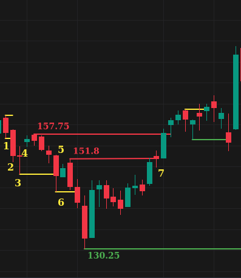
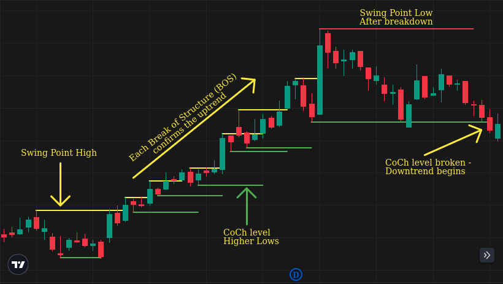
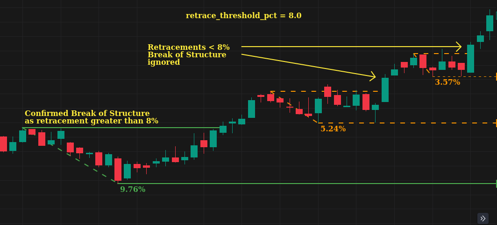

Swing Algorithm¶
Using a Chart Example¶
Referring to the image and the counts marked therein,
This is the first bar. The current trend is None. We mark the high and low of the bar.
The Bar breaks to the downside. The trend is DOWN. The second bar marks a new low.
Bar 3 continues to make new lows.
At 4, the bar failed to make a new low. Bar 3 low (Yellow line) is a Swing Point Low (SPL). We keep track of the highs being made. The next bar makes a new high point at 157.75 (line marked Red), the highest point reached.
Bar marked 5, closes below the SPL. It results in a Break Of Structure (BOS). A BOS confirms the current downtrend. The high point of 157.75 is the Change of Character (CoCH) level.
CoCh marks the reversal level. If this level breaks, it results in a reversal of trend.
At 6, we see another new SPL level, followed by a Break of Structure (BOS), which creates a new CoCh level at 151.8.
At 7, the CoCh level 151.8 is broken with a close above. The trend has now reversed and marked as UP. 130.25 is the lowest point and marks the new CoCh level.
In Summary:¶
In an uptrend,
When a bar fails to make a new high, the most recent high is marked as a Swing Point High (SPH).
CoCh is the lowest retracement point between the SPH high and the BOS (breakout bar).
CoCh is only confirmed when the bar closes above the SPH high.
In a downtrend,
When a bar fails to make a new low, the most recent low is marked as a Swing Point Low (SPL).
CoCh is the highest retracement point between the SPL low and the BOS (breakdown bar).
CoCh is only confirmed when the bar closes below the SPL.
Another explanation¶
Upon initialization, the trend is None.
On the first candle, the high and low marks the current high and low.
The trend is set by whichever candle breaks the high or low of the first candle.
If the low breaks, the trend is DOWN, and the high is the COC (Change of Character).
If the high breaks, the trend is UP, and the low is the COC.
Once the trend is confirmed, every new high or low in the trend direction is the highest high or lowest low. (In the class, it is the Swing.high and Swing.low)
If a candle fails to make a new high or new low in the direction of the trend, the unbroken high or low is a SPH (Swing Point High) or SPL (Swing Point Low).
Any time a candle’s close breaks an SPH or SPL level, it is called a Break of Structure (BOS).
A Break of Structure (BOS) confirms the existing trend direction.
When an SPH breaks on a closing basis, the lowest retracement point is marked as CoCh.
When an SPL breaks on a closing basis, the highest retracement point is marked as CoCh.
If COC breaks on a closing basis, it confirms a reversal in trend.
Retrace Threshold percent¶
The retrace_threshold_pct parameter decides when a BOS is confirmed.
If retrace_threshold_pct is set to a percentage:
A BOS is only confirmed if the price retraced below the threshold.
Example: If
retrace_threshold_pctis set to 5 percent, the price must retrace below 5% before the SPH is broken. If not, the BOS is ignored.
If retrace_threshold_pct is None, anytime an SPH is broken, it is treated as a BOS
regardless of retracement.
Both methods have their advantages and disadvantages.
Why set a retrace_threshold_pct:¶
It is easier to trail profits on long-term positions.
Minor pivots or pullbacks will be ignored and you won’t be stopped by minor fluctuations in the market.
In strong uptrends, the retracements may be shallow, and there maybe no retracement deep enough. This is a potential downside of this method.
This chart uses an 8% retrace threshold. After the SPH is broken at 1292.1 (Marked in yellow), the stock goes into a tight uptrend channel with little to no retracement. In such cases, there are no new CoCh levels to trail your profit. The last CoCh level of 1109.45 is almost 43% down from the highs! For such cases, you need an alternative method to trail positions and protect your profits.¶
Setting retrace_threshold_pct to None:¶
Useful for trailing stops on lower timeframe or even short-term positions.
In high volatility conditions, you are more likely to get stopped out by a minor pivot.
After the first SPH is broken with a gap-up bar, the market retraces very close to the prior CoCh level.¶